What does the equation
What does it represent as a surface in
What does the equation
Sketch the graph of
Sketch the graph of
Describe and sketch the surface
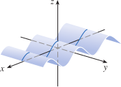
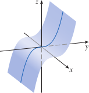
23, 24, 25, 26, 27, 28, 29, and 30 Match the equation with its graph (labeled I–VIII). Give reasons for your choice.
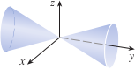
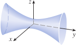
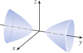
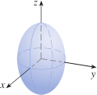
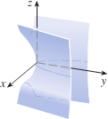
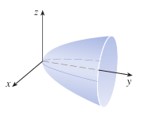
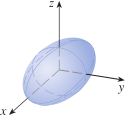
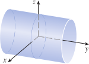
Traces in
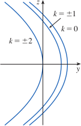
Traces in
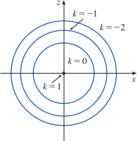
Traces in
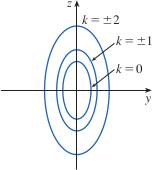
Traces in
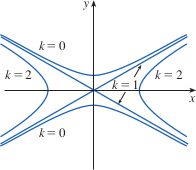
33, 34, 35, 36, 37, 38, 39, and 40 Reduce the equation to one of the standard forms, classify the surface, and sketch it.
41, 42, 43, and 44 Graph the surface. Experiment with viewpoints and with domains for the variables until you get a good view of the surface.
Sketch the region bounded by the surfaces
Sketch the region bounded by the paraboloids
Find an equation for the surface obtained by rotating the curve
Find an equation for the surface obtained by rotating the line
Find an equation for the surface consisting of all points that are equidistant from the point
Find an equation for the surface consisting of all points
Traditionally, the earth’s surface has been modeled as a sphere, but the World Geodetic System of 1984 (WGS-84) uses an ellipsoid
as a more accurate model. It places the center of the earth at the origin and the north pole on the positive
Find an equation of the earth’s surface as used by WGS-84.
Curves of equal latitude are traces in the planes
Meridians (curves of equal longitude) are traces in planes of the form
A cooling tower for a nuclear reactor is to be constructed in the shape of a hyperboloid of one sheet [see Figure 12(b)]. The diameter at the base is
Show that if the point
Show that the curve of intersection of the surfaces
Graph the surfaces